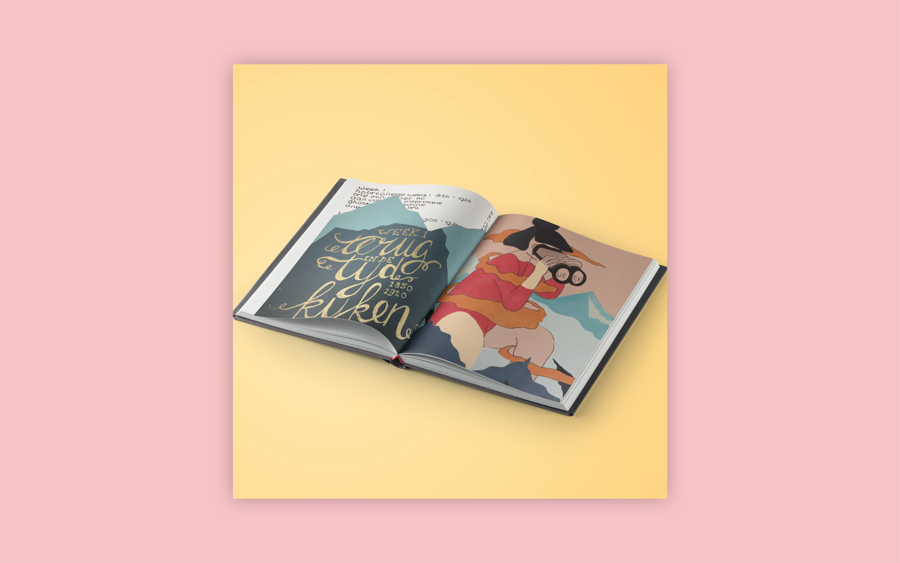

PROJECT WEB
Illustratie
Ontwerpgeschiedenis januari 2017
De opdracht
Ontwerpgeschiedenis is het vak waar ik mijn creativiteit volledig los kon laten. Ik vond het een enorm leuk vak omdat het anders was dan de rest van de vakken. Aan het begin van het blok kreeg je een lege dummy en aan het einde van het blok moest je hem vol inleveren. Je dummy moest een ontwerp probleem uitleggen door middel van hoorcolleges die over ontwerp gingen en aanvullende informatie. Samen met de dummy leverde je ook nog een drieluik op met een analyze van een kunstwerk. Met dit vak kon ik mijn creativiteit op papier heel erg goed naar voren laten komen. Ik vond het ook interessant om over ontwerp geschiedenis te leren omdat ik mij er nog nooit erg in verdiept had. Het bezoek aan het Stedelijk museum vond ik ook erg inspirerend omdat ik op een andere manier naar kunstwerken keek.
Het eindresultaat
Met ontwerp geschiedenis heb ik geleerd om mijn perfectionisme los te laten. Omdat het een boekje wat dat in zo een korte tijd gemaakt moest worden had je niet de tijd om alles helemaal op en top perfect te maken. Uiteindelijk ben ik blij met het resultaat en vind ik het helemaal niet nodig dat zoiets er perfect uit moet zien. Ook heb ik geleerd om na te denken over verschillende soorten design en kan ik dit ook weer gebruiken in mijn kennis over design en de geschiedenis daarvan.
